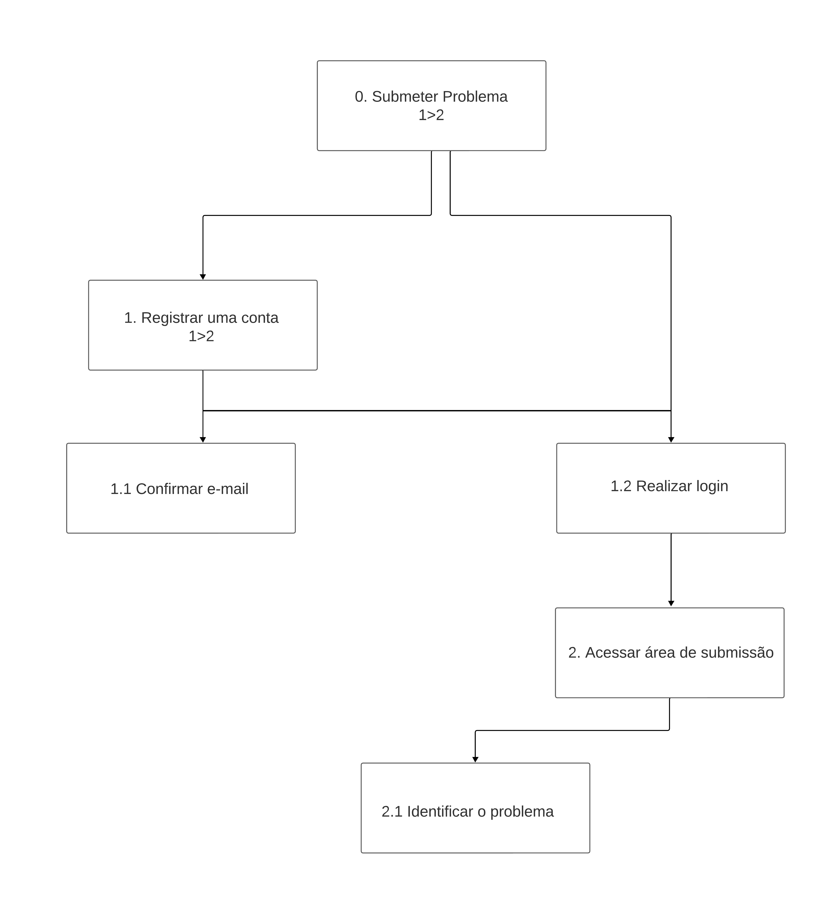
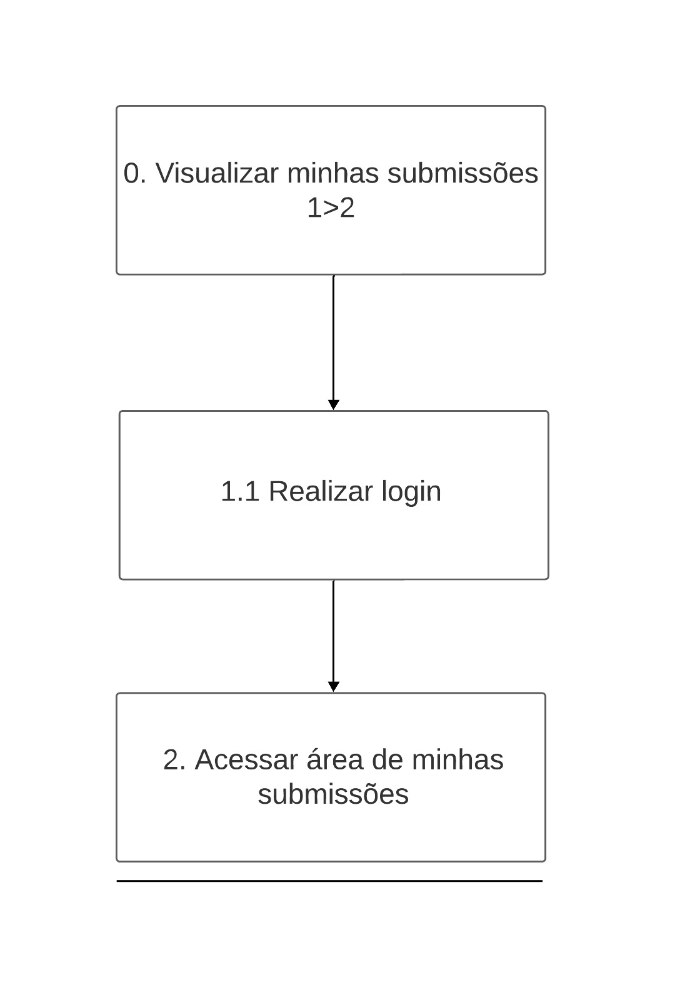
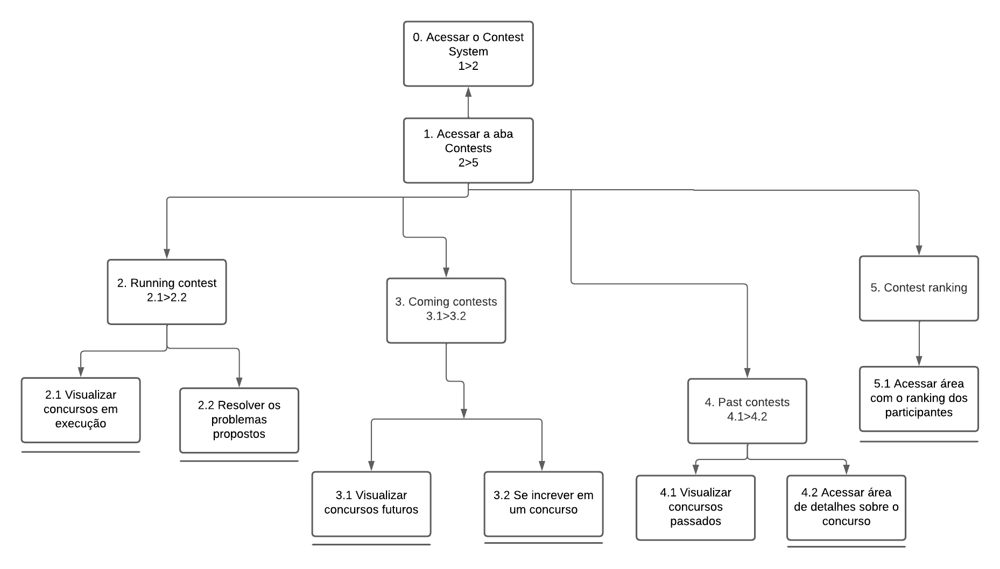

HTA (Análise Hierárquica de Tarefas)
Introdução
A análise de tarefas tem como finalidade proporcionar uma compreensão abrangente das atividades dos usuários, incluindo como as executam e os motivos por trás de suas ações. Nesse contexto, o trabalho é delineado em relação aos objetivos que os usuários buscam alcançar, seja por vontade própria ou por necessidade.
Dessa forma, para realizar a análise de tarefas deste projeto foram escolhidos dois métodos, sendo eles:
-
Hierarchical Task Analysis (HTA);
-
Goals, Operators, Methods and Selection Rules (GOMS);
Análise Hierárquica de Tarefas
A análise Hierárquica de Tarefas (HTA - Hierarchical Task Analysis) visa compreender as competências e habilidades necessárias para a execução de tarefas complexas e não rotineiras, ao mesmo tempo que auxilia na detecção de problemas de desempenho. Ela facilita a conexão entre as ações das pessoas (ou o que é recomendado que façam), os motivos por trás dessas ações e as potenciais consequências de um desempenho inadequado.
Nessa técnica, é necessário identificar tarefas e objetivos. As tarefas referem-se a qualquer parte do trabalho que precisa ser realizado, enquanto o objetivo é um estado final específico definido por eventos ou valores observáveis em uma ou mais variáveis que atuam como critério de alcance do objetivo. Isto é, utiliza-se como base as tarefas a serem realizadas a fim de atingir um objetivo do usuário.
A listagem dessas tarefas precisa ser realizada com base nas propostas de notação textual e gráfica, conforme demonstrado na figura a seguir:

Fonte: adaptado de Barbosa & da Silva (2010)
Essa notação, além de apresentar os objetivos também representa o conceito de operação, que é a representação das ações de entradas e saídas.
Abaixo é possível conferir as principais tarefas que um usuário procura utilizar através do Online Judge.
Submeter problema (Quick Submit)
Nessa tarefa, o usuário possui o objetivo de submeter a solução de um determinado problema proposto. A Figura 2 apresenta o diagrama HTA relativa a essa tarefa, e a Tabela 1 representa o mesmo HTA em formato de tabela.

| Objetivo/Tarefa | Descrição, Recomendações e Problemas |
|---|---|
| 0. Submeter problema | |
| 1. Registrar uma conta | Input: dados para o cadastro Feedback: usuário visualiza mensagem para confirmar e-mail. Plano: confirmar conta e depois fazer login |
| 1.1 Confirmar E-mail | Feedback: após confirmar o e-mail, o usuário é liberado para realizar login |
| 1.2 Realizar login | Input: dados de login Feedback: usuário redirecionado para a página "Home" Plano: abrir página de submissão em "Quick Submit" |
| 2. Acessar área de submissão | Plano: submeter a solução do problema |
| 1.2 Identificar o problema | Input: inserir ID do problema, linguagem utilizada e o referido código do problema Feedback: a página é atualizada e o usuário recebe uma mensagem de submissão enviada Plano: submeter a solução do problema escolhido |
Procurar um problema
Nesta tarefa, o objetivo do usuário é buscar um novo problema para solucionar dentro do site. A Figura 3 apresenta o diagrama HTA relativa a essa tarefa, e a Tabela 2 representa o mesmo HTA em formato de tabela.

Fonte: Suzane Duarte, Pablo Guilherme
| Objetivo/Tarefa | Descrição, Recomendações e Problemas |
|---|---|
| 0. Procurar problemas no Online Judge | Input: click do usuário na aba "Browse Problems" Plano: procurar um problema para resolver Feedback: usuário redirecionado para a página com uma lista de pastas de problemas |
| 1. Acessar pasta de problemas disponíveis | Input: click do usuário na pasta escolhida Feedback: usuário redirecionado para uma página contendo uma lista de pastas de problemas Plano: escolher uma das pastas de problemas disponíveis |
| 1.1 Escolher o volume do problema | Input: click do usuário no volume escolhido FeedBack: Usuário redirecionado para a página seguinte contendo os problemas de fato Plano: visualizar um dos problemas desse determinado volume |
| 1.2 Escolher o problema a ser resolvido | Input: click do usuário no problema FeedBack: Usuário redirecionado para a página seguinte contendo a descrição do problema Plano: ler todas as demais informações do problema |
| 2. Obter informações do problema escolhido | Plano: através do PDF disponibilizado obter todas as informações necessárias para uma possível submissão |
Contatar Colaboradores
Nesta tarefa o usuario tem o objetivo de contatar, colaboradores do site, seja sobre o resultado de submissões, ou para relatar algum problema, ou dar alguma sugestão, a figura 4 apresenta o diagrama HTA relativo a essa funcionalidade e a tabela 3 a mesma em forma de tabela

Fonte: Eric Camargo
| Objetivo/Tarefa | Descrição, Recomendações e Problemas |
|---|---|
| 0. Enviar mensagem para colaborador | Input: click do usuário na aba "Contact us" |
| 1. Inserir nome | Input: nome Feedback: usuário é direcionado para o campo seguinte |
| 2 Inserir E-mail do colaborador desajado | Input: email do colaborador Feedback: após inserir o e-mail, o usuário é liberado para escrever a mensagem |
| 3 Escrever a Mensagem | Input: texto da mensagem Feedback: usuário passa a ser capaz de enviar a mensagem |
| 4. Enviar | Input: enviar Feedback: usuário recebe mensagem de sucesso na operação |
Editar Conta
Nesta tarefa, o usuário tem como objetivo editar sua conta de usuário. A Figura 4 apresenta o diagrama HTA relativa a essa tarefa, e a Tabela 3 representa o mesmo HTA em formato de tabela.

Fonte: Luana Torres, Ester Lino
| Objetivo/Tarefa | Descrição, Recomendações e Problemas |
|---|---|
| 0. Editar Conta | Plano: Editar meu usuário |
| 1. Atualizar imagem | Plano: atualizar foto de perfil |
| 1.1. Editar Detalhes | Plano: atualizar foto de perfil |
| 1.1.1. Imagem | Plano: atualizar foto de perfil |
| 1.1.1.1. Não mudar imagem | Input: update ou cancelar. Feedback: usuário não visualiza nenhuma alteração. |
| 1.1.1.2. Carregar imagem | Input: imagem como foto de perfil. Feedback: usuário visualiza imagem em seu perfil. |
| 1.1.1.3. Selecionar Imagem da Galeria | Input: click do usuário na biblioteca de imagens. Feedback: usuário visualiza imagem escolhida da biblioteca em seu perfil. |
| 1.1.2. Contato | Plano: atualizar detalhes de usuário. |
| 1.1.2.1. Alterar detalhes do perfil | Input: Dados de usuário que deseja ser modificado. Feedback: usuário visualiza dados alterados. |
| 1.1.3. Adicionar Coordenadas Geográficas | Input: Dados de latitude e longitude. Feedback: usuário visualiza dados alterados. |
| 2. Atualizar Perfil | Plano: atualizar detalhes de usuário. |
Visualizar minhas submissões
Nesta tarefa, o usuário tem como objetivo verificar as proprias subimissões de códigos. A Figura 6 apresenta o diagrama HTA relativa a essa tarefa, e a Tabela 5 representa o mesmo HTA em formato de tabela.

Fonte: Suzane Duarte, Pablo Guilherme, Henrique Torres
| Objetivo/Tarefa | Descrição, Recomendações e Problemas |
|---|---|
| 0. Visulizar minhas submissões | Plano: Visualizar minhas submissões no site |
| 1.1 Realizar login | Input: dados de login Feedback: usuário redirecionado para a página "Home" Plano: abrir página "My submissions" |
| 2. Acessar área de minhas submissões | Input: click do usuário na aba "My submissions" FeedBack: Usuário redirecionado para a página "My submissions" |
Acessar o Contest System
Nesta tarefa, o usuário tem como objetivo de visualizar as competições/concursos que estão em execução, os próximos e os que já ocorreram. O diagrama HTA referente à essa tarefa está apresentado na Figura 7 e a Tabela 6 representa o mesmo HTA em formato de tabela.

Fonte: Ester Lino, Luana Torres
| Objetivo/Tarefa | Descrição, Recomendações e Problemas |
|---|---|
| 0. Acessar o Contest System | Input: click do usuário na aba "Contests". |
| 1. Acessar a aba "Contests | Input: click do usuário em uma das quatro opções disponíveis. Feedback: usuário redirecionado para a página escolhida. |
| 2. Running contest | Input: click do usuário na aba "Running contests". FeedBack: usuário redirecionado para a página desejada. |
| 2.1 Visualizar concursos em execução | Plano: ter acesso a todos os concursos em andamento. |
| 2.2 Resolver os problemas propostos | Input: click do usuário no concurso que está inscrito. FeedBack: usuário redirecionado para a página com os problemas do concurso Plano: realizar os exercícios do concurso. |
| 3. Coming contests | Input: click do usuário na aba "Coming contests" FeedBack: usuário redirecionado para a página desejada. |
| 3.1. Visualizar concursos futuros | Plano: ter acesso a todos os concursos futuros. |
| 3.2 Se increver em um concurso | Input: click do usuário no concurso que ele deseja se increver. Feedback: usuário redirecionado para a página de incrição. |
| 4. Past contests | Input: click do usuário na aba "Past contests" FeedBack: usuário redirecionado para a página desejada. |
| 4.1. Visualizar concursos passados | Plano: ter acesso a todos os concursos passados. |
| 4.2 Acessar área de detalhes sobre o concurso. | Input: click do usuário no concurso que ele deseja se visualizar. Feedback: usuário redirecionado para a página de visualização dos detalhes do concurso. |
| 5. Contest ranking | Input: click do usuário na aba "Contest ranking" FeedBack: usuário redirecionado para a página desejada. |
| 5.1. Acessar área com o ranking dos participantes | Plano: ter acesso às informações dos participantes do s concursos. |
Acessar o "Forgot Login?" - Recuperação de login
Nessa tarefa, o usuário tem como objetivo recuperar a senha ou o nome de usuário esquecido, para que possa acessar o sistema. A Figura 8 apresenta o diagrama HTA relativa a essa tarefa, e a Tabela 7 representa o mesmo HTA em formato de tabela.

Fonte: Kallyne Macedo
| Objetivo/Tarefa | Descrição, Recomendações e Problemas |
|---|---|
| 0. Recuperar login | |
| 1. Acessar página "Forgot login?" | Input : click do usuário na aba "Forgot login?" Plano : Encontrar página para recuperação de senha. Feedback : usuário redirecionado para a página de recuperação de login. |
| 1.1 Recuperar Username | Input: click do usuário na checkbox Lost Username Plano: Solicitar recuperação de username por email Feedback: Aparecer campo de preenchimento de e - mail |
| 1.1.1 Informar E - mail | Input: click do usuário para digitar e - mail Plano: Enviar e - mail para recuperar username Feedback: E - mail enviado com sucesso |
| 1.2 Recuperar Password | Input: click do usuário na checkbox Lost Password Plano: Solicitar recuperação de senha por email Feedback : Aparecer campo de preenchimento de e - mail e username |
| 1.2.1 Informar Username e E - mail | Input : click do usuário para digitar username e - mail Plano: Enviar e - mail para recuperar username e password Feedback: E - mail enviado com sucesso |
| 1.3 Recuperar Username e Password | Input: click do usuário na checkbox Lost Password e Lost Username Plano: Solicitar recuperação de username e senha por email Feedback: Aparecer campo de preenchimento de e - mail |
| 2. Solicitar recuperação de login | Input: click do usuário no botão Send Username/Password Plano: envio das informações de login por e-mail Feedback: envio realizado com sucesso. |
Bibliografia
- BARBOSA, S. D. J.; SILVA, B. S. Interação Humano-Computador. Rio de Janeiro: Elsevier, 2011.
Histórico de versão
| Versão | Data | Descrição | Responsáveis | Revisor |
|---|---|---|---|---|
| 1.0 | 01/10/2023 | Introdução a Análise de Tarefas | Suzane Duarte, Pablo Guilherme | Kallyne Macedo |
| 1.1 | 16/10/2023 | Adicionando análise de tarefa Visualizar minhas submissões | Suzane Duarte, Henrique Torres | Pablo Guilherme |
| 1.2 | 16/10/2023 | Adicionando análise de tarefa acessar Contest System e editar perfil | Ester Lino,Luana Torres | Suzane Duarte |
| 1.3 | 16/10/2023 | Adicionando análise de tarefa acessar Forgot Login? e correção de formas | Kallyne Macedo | Suzane Duarte |